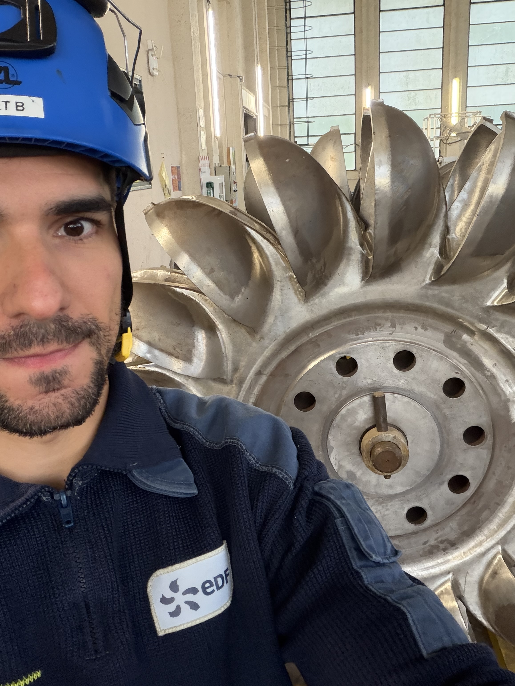
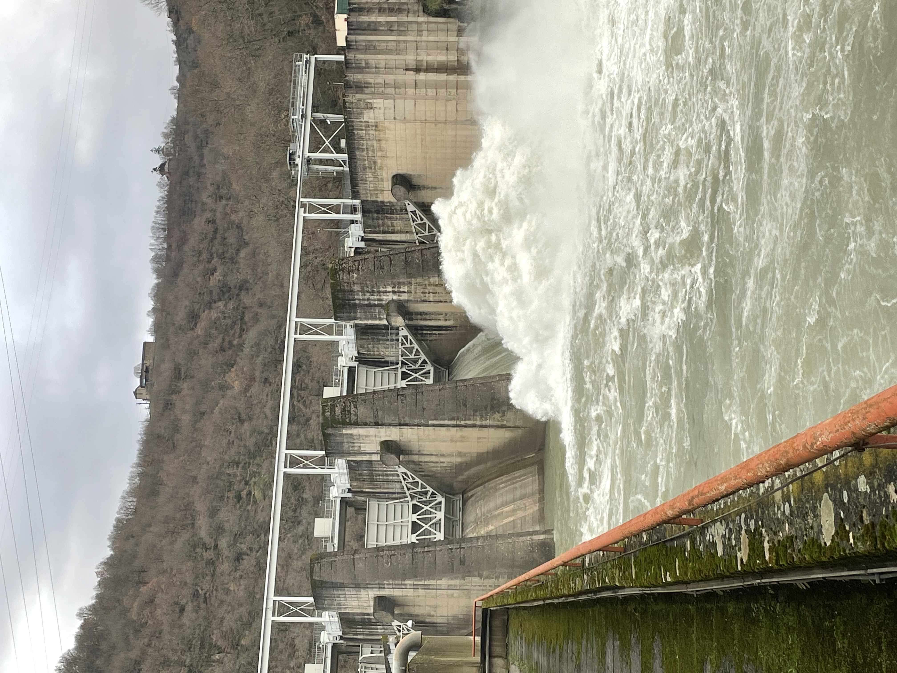
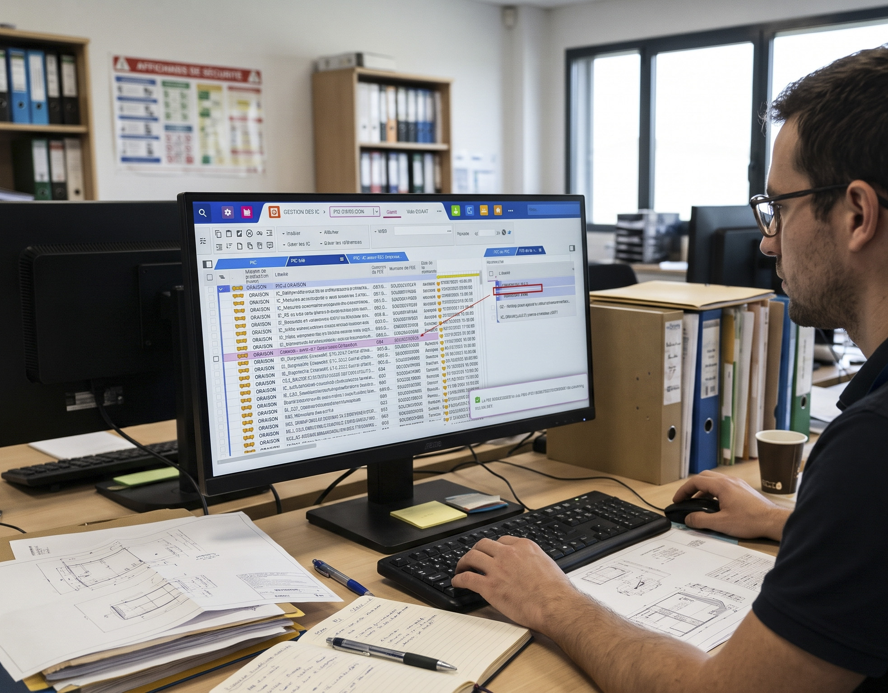
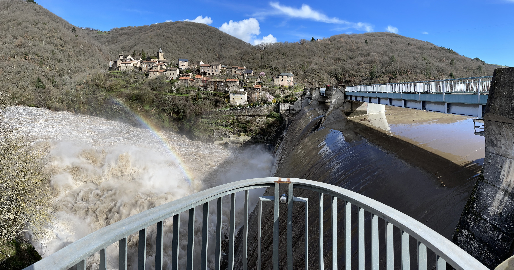
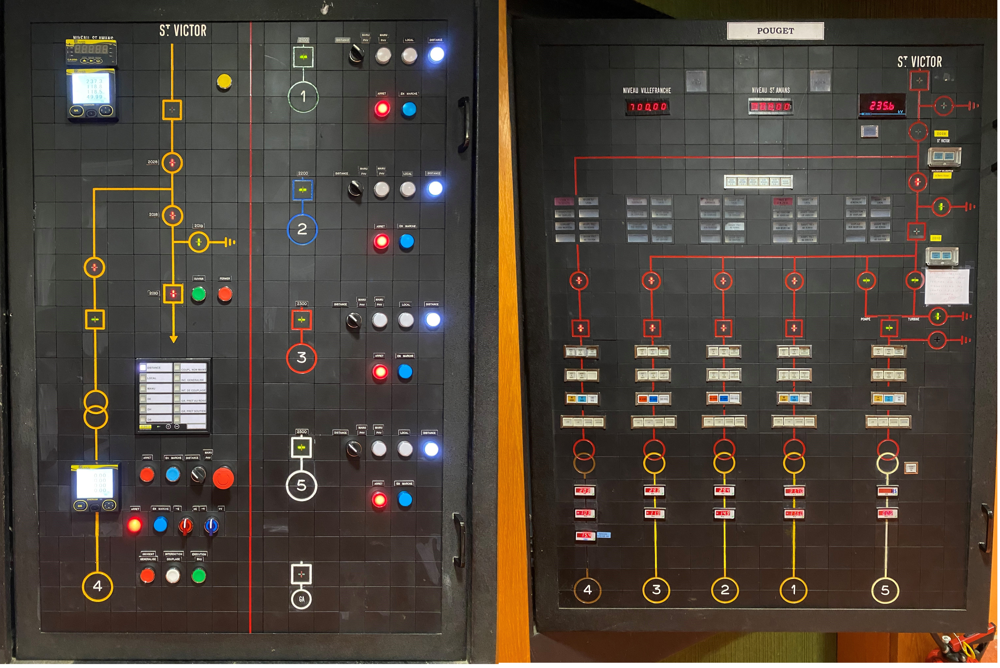
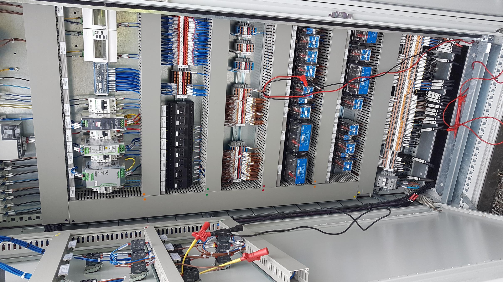
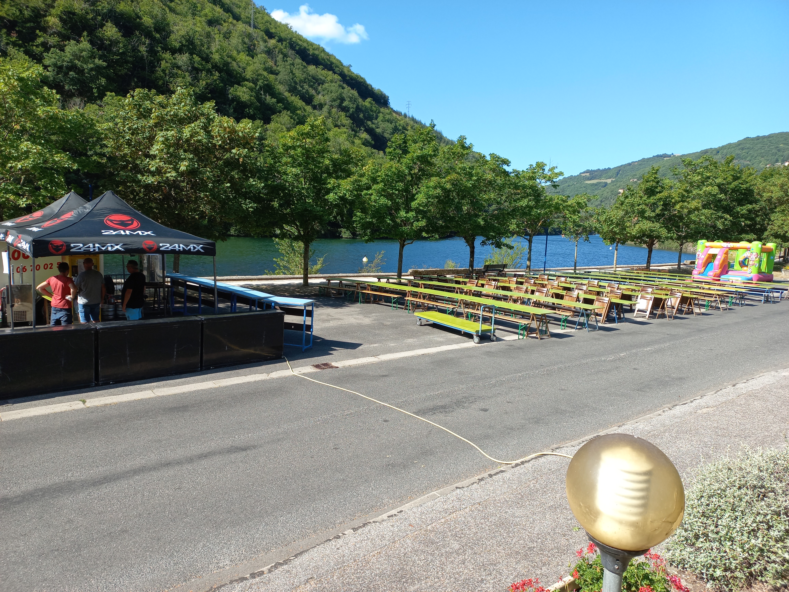
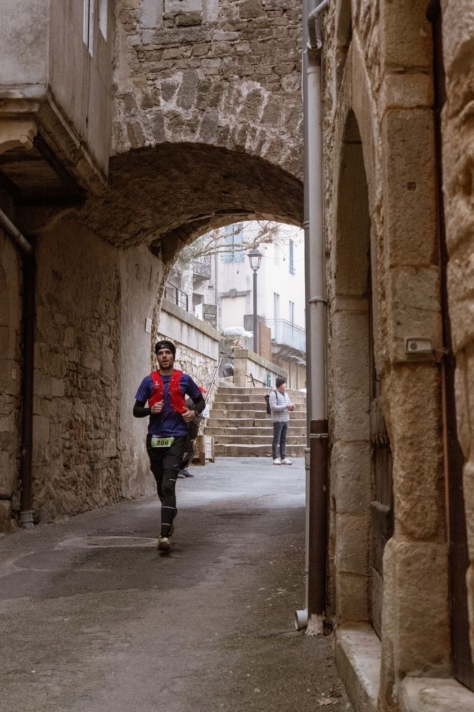

Benoît Gerbet ; Apprenti Ingénieur au sein de l'ENSEEIHT Toulouse en Électronique, Énergie Électrique et Automatique
Au sein d’**EDF Hydro depuis 2013**, j’ai développé de solides connaissances dans l’exploitation des aménagements hydroélectriques. Aujourd’hui, en parallèle de mes fonctions à EDF Hydro Sud-Ouest, je complète cette expérience de terrain par une reprise d’études à l’ENSEEIHT afin d’obtenir un diplôme d’ingénieur et de renforcer mes compétences techniques, méthodologiques et transversales.

Parcours Professionnel & Formation
Évolution chez EDF Hydro depuis 2013 et cursus d'ingénieur ENSEEIHT

Apprenti (Formation continue) Ingénieur
ENSEEIHT (N7)
- Spécialisation en Électronique, Génie Électrique & Automatique (3EA).
Formation Promotionnelle CAP CADRE
GEH Adour & Gaves - EDF Hydro Sud Ouest
- Intégration dans l'équipe d'encadrement du GU de Pragnères sur divers sujets.
- Pilotage du Registre de Sécurité et acteur dans la planification des activités.
- Écriture de cahier des charges pour lancer des affaires.
Assistant Technique avec Astreinte - Animateur d'un lot d'exploitation
Groupement d'usine du Pouget - EDF Hydro Sud Ouest
- Animation et gestion directe d'une équipe opérationnelle de 13 personnes.
- Relais Planification des activités pour le lot Pouget/Truel.
- Intégration dans l'équipe d'encadrement sur divers sujets.
- Transfert de compétences et rôle de Grand Formateur Crue pour les barrages.
Technicien Principal d'Exploitation avec Astreinte
Groupement d'usine du Pouget - EDF Hydro Sud Ouest
- Astreinte, chargé de consignation, de travaux et de conduite en crue.
- Relais Performance/Production et participation active au réseau Exploitant de l'Unité.
- Gestion d'équipe en temps réel (planification et réajustement hebdomadaire).
- Préparation, suivi et évolution du plan de maintenance du lot Pouget-Truel.
- Tutorat d'étudiants en BTS Électrotechnique et accompagnement des embauchés.
Technicien d'Exploitation avec Astreinte
Groupement d'usine du Pouget - EDF Hydro Sud Ouest
- Chargé de consignation, de travaux et de conduite en crue ; préparateur maintenance.
- Mise à jour des schémas électriques et participation au groupe local Production.
Technicien d'Exploitation
Groupement d'usine du Pouget - EDF Hydro Sud Ouest
- Dépannage, améliorations des installations, et activités d’exploitation des aménagements.
DUT Génie Électrique et Informatique Industrielle
IUT Paul Sabatier
- Stage à EDF Hydro où j'ai pu initier la rénovation d'un contrôle commande d'une vanne de tête et avoir un aperçu du métier de technicien.
Compétences Clés & Projets d'Entreprise
Savoir-être, leadership terrain et réalisations d'ingénierie chez EDF Hydro

Un Profil d'Ingénieur Ancré dans le Réel
Combiner l'exigence opérationnelle du terrain chez EDF Hydro (management d'équipe, gestion de crises, astreintes) avec la rigueur scientifique dispensée à l'ENSEEIHT Toulouse.
Mes 6 Compétences Transversales Majeures
Leadership & Management d'Équipe
Démontré par l'encadrement et l'animation directe d'une équipe de 13 personnes au Pouget, ainsi que par 4 années d'éducateur de rugby auprès des jeunes (U8/U10).
Gestion du Stress & Décision sous Pression
Forgé par la tenue d'astreintes opérationnelles, la conduite d'aménagements hydroélectriques en période de crue et votre rôle de Grand Formateur Crue.
Pédagogie & Transmission de Savoir
Illustré par le tutorat d'étudiants en BTS Électrotechnique, l'accompagnement des nouveaux embauchés et la formation des équipes à la sécurité des barrages.
Organisation & Agilité
Prouvé par la planification de chantiers, le réajustement des plannings en temps réel et votre reprise d'études d'ingénieur à l'ENSEEIHT (dispositif CAP'CADRE).
Esprit d'Équipe & Cohésion
Nourri par 16 ans de pratique du rugby en club, la participation au réseau d'exploitants EDF et vos engagements associatifs (musicien en banda, comité des fêtes).
Résilience, Ambition & Dépassement
Témoigné par votre goût du défi sportif en compétition (cyclisme sur route, trail, triathlon) et votre évolution professionnelle continue chez EDF.
Projets d'Entreprise EDF Hydro
Réalisations techniques et travaux académiques applicatifs

Projet 1 : Conduite d'Ouvrage & Crue
Optimisation des consignes d'exploitation et procédures de sécurité lors des épisodes de crues majeures sur l'aménagement du Pouget.

Projet 2 : Rénovation Automatisme
Étude de modernisation d’un pupitre de contrôle-commande destiné au pilotage d’un groupe capable de réalimenter certains auxiliaires contribuant à la sûreté du réseau électrique.

Projet 3 : Exploitation & Dépannage Hydroélectrique
Conception et Mise à jour des schémas électriques sur un logiciel spécialisé pour les centrales hydrauliques. Application des méthodes de recherches de défauts.
Interviews de Professionnels des IEG
Regards croisés sur les Industries Électriques et Gazières & métiers d'ingénieur

Enquêtes Métiers & Vision Industrielle
Série d'entretiens menés auprès de cadres et d'experts de la branche des IEG (Industries Électriques et Gazières) pour éclairer les évolutions technologiques, managériales et environnementales du secteur.
Interview 1 : Chef d'Exploitation Hydro
Responsable de Groupement d'Usines • EDF Hydro
Échange centré sur le management de crise, la conduite des barrages en temps réel et l'évolution des compétences attendues des futurs ingénieurs de terrain.
Interview 2 : Expert Sûreté & Ouvrages
Ingénieur Expert Sûreté Hydraulique
Discussion autour de la réglementation des grands barrages, des études de danger et de l'intégration des aléas climatiques extrêmes dans le calcul des structures.
Interview 3 : Manager Transition Énergétique
Ingénieur Dispatching & Flexibilité Réseau
Focus sur le rôle stratégique de l'hydroélectricité dans le stockage d'énergie et l'équilibrage du réseau face à la montée des énergies renouvelables intermittentes.
Engagement Civique & Associatif
Implication locale, vie associative et transmission auprès des jeunes

Ancrage Territorial & Esprit de Partage
Au-delà du cadre professionnel, mon engagement s'exprime dans la vie locale à travers l'encadrement des jeunes au rugby, la musique en banda et le soutien aux comités des fêtes, ainsi que le tutorat en entreprise.
Éducateur Rugby Jeunes (U8 / U10)
4 années d'engagement pour faire progresser les enfants, transmettre le respect de l'arbitre, du collectif et la bienveillance sportive.
Musicien en Banda & Comité des Fêtes
Participation active à la vie culturelle festive régionale, développement du sens de l'écoute, de l'harmonie et de la bonne humeur partagée.
Tutorat BTS Électrotechnique
Accompagnement pédagogique des jeunes étudiants et alternants chez EDF Hydro pour réussir leur insertion professionnelle.
Sport & Activités Extérieures
Culture du défi, endurance et équilibre personnel au service de la posture d'ingénieur
16 Ans de Rugby, Cyclisme & Triathlon
La compétition sportive enseigne l'humilité, la régularité dans l'effort et la capacité à repousser ses limites. Des atouts directement transposables dans la gestion de projets complexes chez EDF Hydro.

16 Ans de Pratique du Rugby en Club
Une aventure humaine fondatrice. Respect absolu du partenaire, goût du combat collectif et solidarité indéfectible face à l'adversité.
Cyclisme sur Route, Trail & Triathlon
Engagement régulier dans des épreuves d'endurance en compétition. Gestion méticuleuse de l'effort sur la durée et résilience mentale.